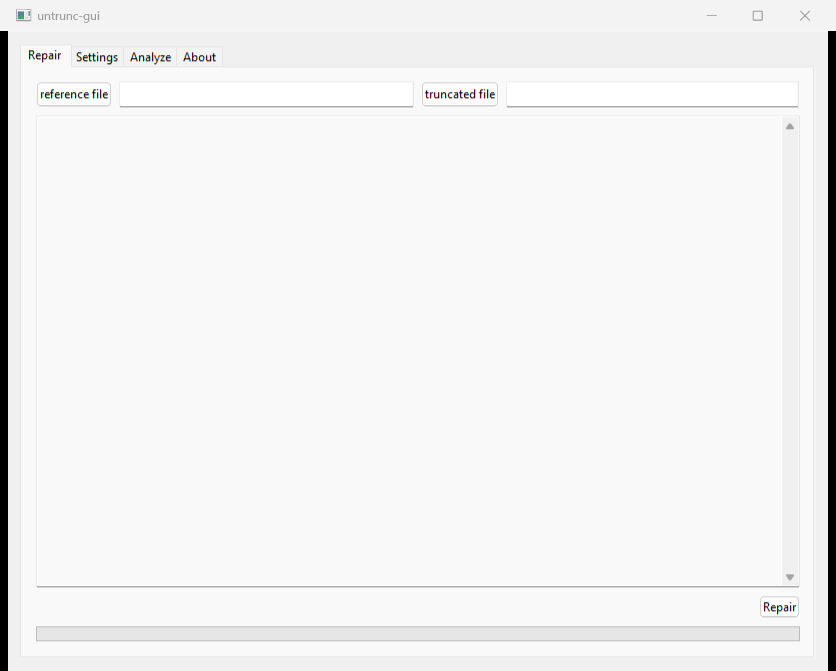

בקצרה
- מה קרה: התוכנה בונה לקובץ הפגום מפה חדשה לפי הקליפ לדוגמה. אם הדוגמה שונה מהקובץ בפרט אחד קטן (קצב פריימים, סוג דחיסה, הגדרת סאונד), המפה יוצאת עקומה, והתוצאה מקרטעת או חסרה.
- מה לא לעשות עכשיו: לא להתקין עוד תוכנה, לא לנסות “להמיר” את התוצאה, ולא למחוק את הקובץ המקורי או את הניסיונות.
- מה כן: עוברים על חמש הבדיקות למטה, לפי הסדר. ברוב המקרים הפתרון הוא קליפ לדוגמה אחר.
מה יצא לכם? זה אומר מה לבדוק
- הסרטון קופץ, מופיעים ריבועים, או הסאונד זז לקראת הסוף: הקליפ לדוגמה לא תואם מספיק. בדיקות 2 ו-3.
- אין סאונד בכלל: הגדרת הסאונד בקליפ לדוגמה שונה (למשל מיקרופון חיצוני מול פנימי). בדיקה 3.
- הקובץ שיצא קצר בהרבה ממה שצילמתם: או שהחומר באמת לא שם (בדיקה 1), או שהתוכנה נעצרה באמצע (בדיקה 4).
- התוכנה קרסה, או שלא יצא כלום: בדיקות 1 ו-5.
- הקובץ נפתח ונראה מצוין: בודקים את כולו לפני שסומכים עליו, גם את הסוף. הבעיות מסתתרות באמצע.
חמש בדיקות, לפי הסדר
- הקובץ שלם? משווים את הגודל למקור בכרטיס. קובץ שהגיע בהעברה (WeTransfer, דרייב, הורדה) ונעצר באמצע נראה בסדר ומבפנים ריק, ואת זה שום תוכנה לא בונה. איך יודעים: אותו גודל בדיוק כמו בכרטיס. אם אין גישה לכרטיס, שולחים לי ואני בודק אם החומר בפנים, בחינם.
- הקליפ לדוגמה תואם בדיוק? אותה מצלמה, אותה רזולוציה, אותו מספר פריימים לשנייה, אותו סוג דחיסה (H.264 או HEVC), אותה איכות הקלטה. הכי בטוח: הקליפ שצולם ממש לפני או אחרי הקובץ שנפגע, בלי לשנות הגדרות. ב-DJI וב-GoPro שווה לוודא שהמצלמה לא עברה בין H.264 ל-HEVC באמצע היום.
- גם הסאונד תואם? אותה הגדרת סאונד: מיקרופון פנימי או חיצוני, אותו מספר ערוצים, אותה איכות. קליפ שצולם עם מיקרופון אחר יכול לתת סרטון מושלם בלי סאונד.
- הרצתם על עותק, מהדיסק של המחשב? עובדים על עותק שנמצא במחשב, לא ישירות מהכרטיס ולא מדיסק חיצוני איטי. קובץ גדול לוקח זמן: לקובץ של שעה התוכנה יכולה לעבוד דקות ארוכות בלי להראות התקדמות. מחכים.
- סוני: סימנתם את האפשרות של RSV? בהגדרות התוכנה יש אפשרות לקבצי RSV, ובלי הסימון היא לא מזהה את הקובץ בכלל. ואם לא יוצא כלום בשום קובץ, מורידים מחדש את הגרסה העדכנית.
מה עושים כשכל זה לא עזר
מנסים קליפ לדוגמה אחר, ועוד אחד. זה נשמע מוזר, אבל זה הפתרון ברוב המקרים: קליפ אחד לא מספיק דומה, אחר כן. אם אחרי שלושה קליפים שונים התוצאה עדיין מקרטעת, או שהקובץ בכלל לא נפתח, זה הזמן לשלוח: הבדיקה אצלי בחינם, ואני אומר לכם אם החומר קיים ואם שווה להמשיך.
שאלות נפוצות
- תוכנה בתשלום תעשה את זה טוב יותר? לא. כולן עובדות באותה שיטה: בונות מפה חדשה לפי קליפ לדוגמה. אם untrunc נכשל בגלל קליפ לא תואם, גם הן ייכשלו מאותה סיבה.
- הסרטון נפתח, אבל הסאונד זז רק בסוף. זה מספיק טוב? לעריכה, לא. סאונד שזז בסוף אומר שהמפה קצת עקומה לאורך כל הקובץ. קליפ לדוגמה תואם יותר פותר את זה, לא ייצוא מחדש.
- איך יודעים שהחומר בכלל קיים בקובץ? בודקים כמה מהקובץ הוא אפסים. זה מה שאני עושה בבדיקה החינמית, ולוקח לזה דקה. קובץ שרובו אפסים לא ניתן לשחזור בשום תוכנה.
אם נתקעתם
הקובץ גדול, גם הריצה השנייה יצאה מקרטעת, או שפשוט אין לכם זמן להתעסק עם זה? שלחו לי קישור לקובץ ולקליפ תקין מאותה מצלמה. קודם כול אני בודק אם החומר בכלל נמצא בקובץ, ואומר לכם בדיוק מה המצב. הבדיקה הזאת בחינם. אם יש מה לשחזר ותרצו להמשיך, אני מציע מחיר לפני שמתחילים, ולא גובה כלום בלי שאישרתם אותו. אפשר לבטל בכל שלב לפני שהעבודה התחילה, ואם לא הצלחתי לשחזר, לא שילמתם.
מעדיפים מייל? avihaiteram@gmail.com
מי אני
אביחי תרם, צלם ועורך וידאו, מצלם על Sony FX3. את קובץ ה-RSV הראשון שחזרתי לעצמי: הקלטה של כמעט שעתיים שהמצלמה לא סיימה לכתוב, וחזרה שלמה. מאז עברו דרכי עוד קבצים, של סוני ושל DJI, וגם אחד שהתברר כחצי ריק כי ההעברה נתקעה. אני עוסק מורשה (אביחי תרם, ע.מ. 206824625), הבדיקה הראשונה תמיד בחינם, ואם לא הצלחתי, לא שילמתם.